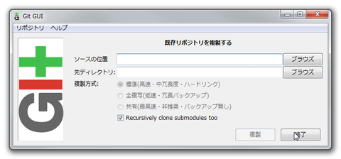

https://git-for-windows.github.io/
レポジトリを置くフォルダを開く 既存レポジトリを複製する
 * ソースの位置：http://～/hogehoge.git * 先ディレクトリ：今開いているフォルダ
http://facebookdevnice.blogspot.jp/2012/06/git-gui-git.html
git repository を作る
remote に push する
$ git push -u origin master
remote から一度 pull する
$ git pull origin
branch を切る
$ git branch hogehoge $ git branch > * master > hogehoge $ git checkout hogehoge $ git branch > master > * hogehoge
より簡単に branch 切った後そちらに移るには
$ git checkout -b hogehoge作成・修正する -> コミット
$ git commit -a -m "comment"
リモートへプシュする前に、リモートと同期 一人なら関係なさそうな気もするが・・・これでmaster branchを最新の状況にする。
$ git checkout master $ git pull origin master
7-1) --ff (default) hogehoge に master を移動させる感じ？ログが一本になる。作業用ブランチがあったことをログに残さない。
$ git merge hogehoge
$ git merge --ff hogehoge //default（上と同じ)7-2) --no-ff hogehoge の結果を master に繰り込む感じ？作業用ブランチがあったことを残す。基本的にはこれかな？
$ git merge --no-ff hogehoge7-3) --squach hogehoge での変更を master に適用して、hogehoge がなかったことに。１コミットとして考えられる。 merge後、commit が必要。
$ git merge --squash hogehoge
$ git commit図で分かるgit-mergeの--ff, --no-ff, --squashの違い - アジャイルSEを目指すブログ
最新のmasterを作業用ブランチにリベース
$ git checkout hogehoge $ git rebase master
作業用ブランチを最新のmasterにリベース master = 作業用の位置合わせ（コミットグラフ的にも）
$ git checkout master $ git rebase hogehoge
$ git merge --ff-only hogehoge //こちらでもよい
リモートへpush
$ git push origin master
GITでリモートブランチへpushする前にやっておくべきこと - ITエンジニアとして生きる
"リベースの操作によって、bugfixブランチ上にあった2つのコミットは改変された（一度、破棄され、新たに作成された）ということがわかります。 マージの場合と異なり、リベースはコミットを改変する作業なのです。"
merge は簡単であるし、統合前ブランチのコミットも改変されず、ブランチの情報を分離して保持することが出来る。しかし、履歴が複雑化する原因となる。rebaseは履歴がシンプルであるが、競合時対処が難しく、コミット改変を行ってしまう点に注意。
[Git] 使い分けできていますか？マージ（merge）&リベース（rebase）再入門 - The Powerful Code